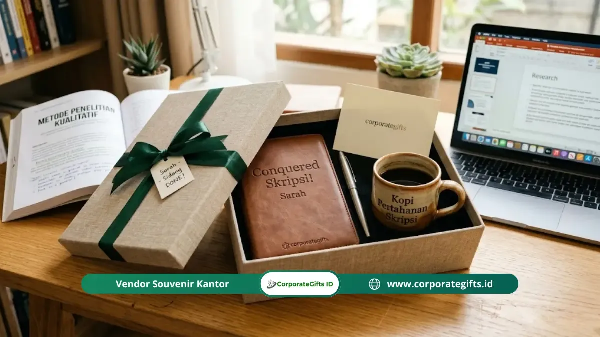

Corporate Gifts ID - Mencari kado sidang skripsi unik? Kado sidang skripsi unik adalah hadiah yang dirancang khusus dan dipersonalisasi sesuai karakter penerima, seperti barang custom nama, ilustrasi digital, atau scrapbook kenangan kuliah. Berbeda dengan hadiah standar seperti cokelat minimarket atau buket bunga plastik generik, kado personal memiliki nilai emosional yang tinggi karena menunjukkan perhatian spesifik dari pengirimnya, sehingga sahabat atau kerabat Anda langsung merasa sangat dihargai atas perjuangan akademiknya.
Poin Kunci Memilih Kado Sidang Skripsi:
- Nilai Emosional Tinggi: Kado unik tidak harus mahal; yang membedakannya adalah tingkat personalisasi, seperti ukiran nama, tanggal sidang, atau foto memori bersama.
- Segmentasi Kebutuhan: Pilihan hadiah untuk cewek menonjolkan estetika memori (scrapbook, ilustrasi, perhiasan inisial), sedangkan cowok menyukai fungsionalitas praktis (pouch EDC, tumbler teknis, buku incaran).
- Manajemen Waktu Order: Pesan produk custom 1 hingga 2 minggu sebelum jadwal sidang untuk mengantisipasi masa antrean produksi vendor dan durasi pengiriman.
Mengapa Kado Personal Jauh Lebih Berkesan dari Kado Standar?
Kado personal lebih berkesan karena ia mengomunikasikan sesuatu yang jarang disampaikan secara verbal: bahwa Anda sungguh-sungguh memperhatikan penerima sebagai individu yang unik, bukan sekadar menggugurkan kewajiban memberi hadiah selamat.
Kado standar seperti buket bunga plastik tanpa aroma, cokelat dalam kotak toko kelontong, atau kartu ucapan generik yang bertuliskan kata selamat memang terasa aman dan praktis. Namun, barang-barang tersebut hampir tidak pernah menjadi hadiah yang disimpan atau dikenang bertahun-tahun kemudian.
Sebaliknya, kado yang menunjukkan bahwa pemberi mengetahui detail kecil perjuangan riset, hobi, atau cita-cita penerima selalu menyentuh sanubari. Di industri merchandise dan souvenir custom, permintaan terhadap hadiah personalisasi nama dan tanggal momen kelulusan terus meningkat pesat. Ini membuktikan bahwa keunikan personal kini jauh lebih berharga di mata generasi muda dibanding kemewahan yang serba seragam.
Kado Sidang Skripsi Unik dan Personal untuk Cewek
Kado personal untuk perempuan umumnya menyentuh dua pilar penting: estetika visual dan kedalaman kenangan. Hadiah terbaik adalah yang mampu memadukan kedua aspek tersebut secara harmonis:
1. Scrapbook Perjalanan Kuliah
Ini bukan sekadar album foto biasa. Kumpulkan dokumentasi visual sejak masa orientasi studi (ospek), praktikum laboratorium, kepanitiaan kampus, hingga H-1 sebelum malam penulisan skripsi tuntas. Susun secara artistik di dalam scrapbook dengan tambahan catatan tulis tangan pada setiap lembarnya. Anda juga bisa menyematkan benda kenangan seperti tiket bioskop masa bimbingan atau tiket kereta seminar. Nilai nostalgianya tidak akan bisa tertandingi oleh benda mahal apa pun.
2. Gelang atau Kalung dengan Inisial Nama
Aksesori minimalis dengan liontin inisial nama penerima atau ukiran tanggal sidang skripsi adalah hadiah manis yang dapat dikenakan sehari-hari. Perhiasan semacam ini menjadi pengingat halus bahwa ia adalah pejuang tangguh yang berhasil menuntaskan babak terberat masa studinya.
3. Custom Ilustrasi atau Potret Digital Berbingkai
Pesan ilustrasi digital wajah penerima memakai toga atau pakaian sidang dari seniman lokal. Pilih gaya ilustrasi kartun, watercolor, atau line art minimalis yang mencerminkan karakternya, lalu cetak menggunakan kertas premium dan berikan bingkai kayu estetik. Ini akan menjadi pajangan dinding kamar yang sangat eksklusif.
4. Set Skincare dengan Pesan Self-Care
Setelah berbulan-bulan kurang tidur dan terpapar layar laptop, perawatan kulit adalah kebutuhan nyata. Rangkai paket produk skincare andalannya bersama sepucuk surat tulis tangan yang mengingatkan betapa pentingnya merawat diri kembali pasca-sidang. Konteks perhatian inilah yang menyulap kosmetik biasa menjadi hadiah yang sangat menyentuh.
5. Lilin Aromaterapi Custom Label
Lilin aromaterapi berbahan soy wax artisan kini banyak yang menyediakan layanan custom label. Sematkan nama penerima, judul skripsi ringkas, atau tanggal sidang di wadah kacanya. Selain estetik untuk dekorasi kamar, aroma lavender atau chamomile sangat ampuh melepaskan ketegangan saraf pasca-sidang.

Kustomisasi hadiah kelulusan dengan inisial nama dan kutipan personal meninggalkan kesan mendalam yang tak terlupakan.
Kado Sidang Skripsi Unik dan Personal untuk Cowok
Hadiah untuk teman atau pasangan pria biasanya paling tepat sasaran jika berorientasi pada fungsionalitas nyata, namun tetap membuktikan bahwa Anda mengerti rutinitas dan kegemarannya:
1. Buku Referensi Incaran atau Genre Favorit
Ingat kembali obrolan santai Anda atau cari tahu judul buku yang sudah lama ia simpan di daftar keinginan belanja namun belum sempat dibeli. Menghadiahkan buku nonfiksi pengembangan diri atau karya fiksi dari penulis favoritnya menunjukkan bahwa Anda menyimak minat intelektualnya secara mendalam.
2. Tumbler Stainless dengan Kutipan Program Studi
Cetak istilah teknis pemrograman, rumus fisika ikonik, pasal hukum legendaris, atau lelucon internal dari jurusannya di atas permukaan tumbler stainless steel custom. Hadiah ini sangat fungsional untuk rutinitas kerja pertamanya kelak, sekaligus menjadi monumen kenangan manis perjuangannya.
3. Kaos Custom Bertema Topik Penelitian
Rancang kaos berbahan katun combed premium dengan grafis minimalis bertema subjek penelitian skripsinya. Kaos kasual dengan infografis mini atau diagram arsitektur sistem yang pernah ia rancang sendiri akan menjadi busana favorit yang ia banggakan saat berkumpul bersama rekan sejawat.
4. Pouch EDC (Everyday Carry) Kulit Sintetis
Banyak pria membutuhkan kantong ringkas yang kokoh untuk menampung charger, kabel data, powerbank, USB drive, dan kunci kendaraan. Pouch EDC berbahan kulit sintetis tahan air dengan grafir inisial namanya adalah hadiah yang langsung terpakai setiap hari saat ia memasuki dunia kerja profesional.
5. Voucher Langganan Platform Digital atau Game
Bagi teman pria penikmat gim daring atau penggemar serial audio-visual, memberikan saldo Steam, PlayStation Network, atau perpanjangan akun streaming berbayar adalah wujud perayaan liburan pasca-skripsi yang paling menyenangkan dan dijamin terpakai 100%.
Pilihan Kado Unik Netral (Unisex) untuk Siapa Saja
Jika Anda menginginkan alternatif hadiah netral yang cocok untuk semua gender namun tetap terasa istimewa, opsi berikut sangat direkomendasikan:
- Custom Puzzle Foto Bersama: Cetak foto momen paling lucu atau haru selama masa kuliah menjadi kepingan puzzle akrilik atau kayu yang interaktif dan dapat dipajang.
- Hampers Personal Bertema Hobi: Rangkai sendiri kotak bingkisan berkonsep khusus. Misalnya hampers pecinta kopi (biji kopi artisan, cangkir enamel, manual dripper) atau hampers pecinta tanaman hias.
- Tanaman Hias Mini Pot Grafir Nama: Sukulen atau kaktus mini di dalam pot terakota berukirkan nama dan gelarnya melambangkan pertumbuhan babak kehidupan baru yang siap mekar.
Tabel Rekomendasi Kado Berdasarkan Karakter Penerima
Gunakan tabel matriks rekomendasi berikut untuk mencocokkan pilihan hadiah dengan preferensi dan kepribadian spesifik rekan Anda:
| Tipe Penerima | Rekomendasi Kado Terbaik | Estimasi Budget | Kelebihan Utama |
|---|---|---|---|
| Sahabat Perempuan Sentimental | Scrapbook kenangan kuliah, kalung inisial, lilin custom | Rp75.000 - Rp200.000 | Menyentuh perasaan, awet disimpan selamanya |
| Rekan Pria Praktis & Fungsional | Pouch EDC kulit, tumbler vacuum quote jurusan, buku incaran | Rp85.000 - Rp250.000 | Pasti terpakai untuk persiapan masuk kantor |
| Kolega Intelektual & Ambisius | Pulpen metal grafir nama, notebook agenda kulit, plakat akrilik | Rp100.000 - Rp300.000 | Mencerminkan profesionalisme dunia pascasarjana |
| Grup Teman Satu Bimbingan (Kolektif) | Gift box hampers camilan premium, puzzle foto bimbingan | Rp150.000 - Rp350.000 | Bisa dinikmati dan dirayakan bersama-sama |
Tips Praktis Memesan Kado Custom untuk Sidang Skripsi
Memesan kado custom membutuhkan sedikit ketelitian manajemen waktu agar pesanan tiba tepat pada hari-H. Simak tips praktis dari tim CorporateGifts.ID berikut:
- Perhitungkan Waktu Produksi (Lead Time): Rata-rata vendor merchandise online memerlukan waktu pengerjaan 2 sampai 5 hari kerja di luar durasi ekspedisi logistik antar-kota.
- Pesan Jauh-Jauh Hari: Khusus kerajinan tangan rumit seperti lukisan wajah atau scrapbook manual, selesaikan pemesanan 1 hingga 2 minggu sebelum agenda sidang.
- Wajib Minta Mockup Digital: Sebelum proses cetak atau laser grafir dijalankan, mintalah gambar pratinjau (digital mockup) untuk memastikan proporsi tata letak desain.
- Verifikasi Ketelitian Ejaan (Zero Typo): Teliti kembali penulisan nama lengkap, ejaan gelar sarjana yang baru diraih, dan tanggal perayaan, sebab barang kustomisasi tidak dapat direfund apabila terjadi kekeliruan data dari pihak pemesan.
Kesimpulan
Menghadiahkan kado sidang skripsi yang estetik dan berkesan mendalam sama sekali tidak mengharuskan Anda mengeluarkan biaya fantastis. Nilai utama dari cinderamata kelulusan terletak pada kejelian Anda mengenali karakter unik sahabat, lalu menerjemahkannya ke dalam bentuk hadiah yang sarat perhatian tulus.
Pilihlah salah satu ide di atas, lalu lengkapi dengan kartu ucapan bertuliskan tangan. Sentuhan personal inilah yang akan menjaga kehangatan persahabatan Anda hingga bertahun-tahun mendatang.